ggplot2Data visualization refers to the techniques used to communicate data or information by encoding it as visual objects (e.g., points, lines or bars) contained in graphics. According to Friedman (2008) the main goal of data visualization is to communicate information clearly and effectively through graphical means.
According to Friedman, that does not mean that data visualization needs to look boring to be functional or extremely sophisticated to look beautiful. To convey ideas effectively, both aesthetic form and functionality need to go hand in hand. However, designers often fail to achieve a balance between form and function, creating gorgeous data visualizations which fail to serve their main purpose: to communicate information (Friedman 2008).
Key concept
Graphs are
a great tool to explore the data and they are essential for presenting
results. Their main goal is to communicate information clearly and
efficiently to users. Visualization is one of the steps in data analysis
or data science.
Each new visualization can give us insights about our data. Some of this revealing information may already be known (but perhaps not yet demonstrated), while other aspects may be completely new to us. The figure below represents the process of searching for new insights in the data (Aisch 2019).
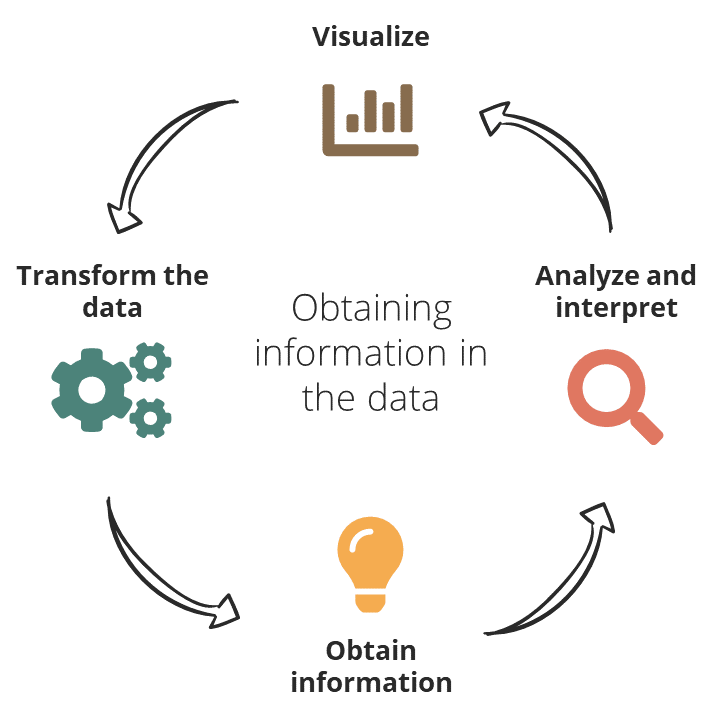
Learn the grammar of graphics of ggplot2
Create the most common bioinformatic graphs (scatter plots, line plots, bar plots, …)
Distinguish graphic quality indicators
Learn the characteristics of effective graphic displays
Choose a representation that shows the raw data, including paired designs
Prepare publication-ready figures (multi-panel, resolution, size)
In this practical, we are going to use the RStudio integrated development environment (IDE) for R. R is a programming language for statistical computing and graphics.
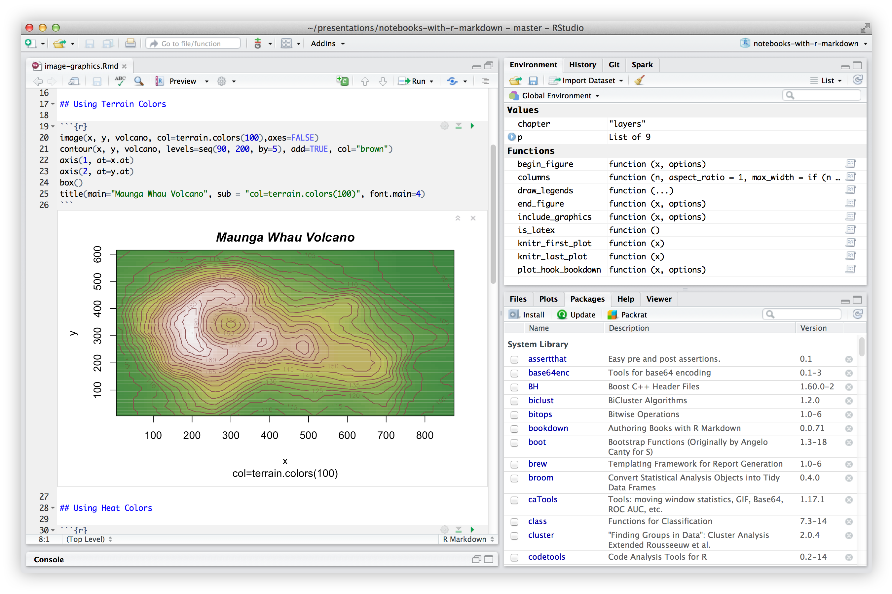
The current document in which we are working is an R Markdown document. Similar to a Jupyter Notebook, R Markdown documents are fully reproducible and allow you to combine text, images and code –in this case, in the R programming language.
To render an R Markdown document to an HTML file,
you just need to click the Knit button that you’ll see in
the RStudio bar. This HTML file can be shared as a report.
You don’t need to render the whole document every time you want to
see the result of your R code. You can click on the
Run current chunk button or use the keyboard shortcut
Ctrl+Alt+C and the result of the
code will appear below it.
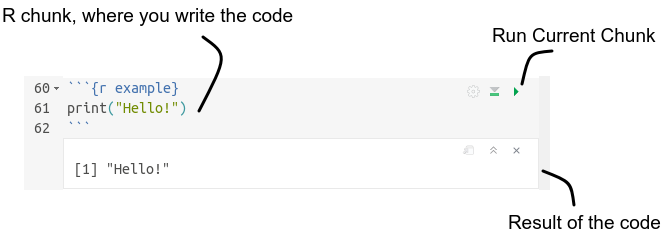
You will see different icons throughout the document, with the following meaning:
: additional or useful
information
: a worked example
: a practical exercise
: a space to answer the exercise
: a hint to solve an exercise
: a more challenging exercise
We strongly recommend using a Linux operating system and getting used to working with the terminal. In this practical, though, we won’t use it, and there’s almost no difference between using RStudio on Windows or on Linux.
The R programming language can be downloaded from here, and is available for Windows, Linux and macOS.
RStudio is available to download from here. You can easily install it on Windows, Linux and macOS.
R packages are collections of functions and/or data developed by the community.
To install a package, we use the install.packages()
function, indicating between quotes the name of the package we want to
install.
ggplot2ggplot2 is a data visualization package for the
statistical programming language R (Wickham 2009).
It was created by Hadley Wickham, implementing Leland Wilkinson’s
Grammar of Graphics –a general scheme for data visualization which
breaks up graphs into semantic components (Wilkinson
2010).
To install the ggplot2 package, use the following:
install.packages("ggplot2")
In this practical we will also use two additional packages:
tidyr, to reshape data, and patchwork, to
combine several plots into one figure:
install.packages(c("tidyr", "patchwork"))
To load a package, we use the function library(),
indicating the name of the package we want to load.
In the case of ggplot2, you’ll use:
library("ggplot2")
You’re ready to start creating graphs!
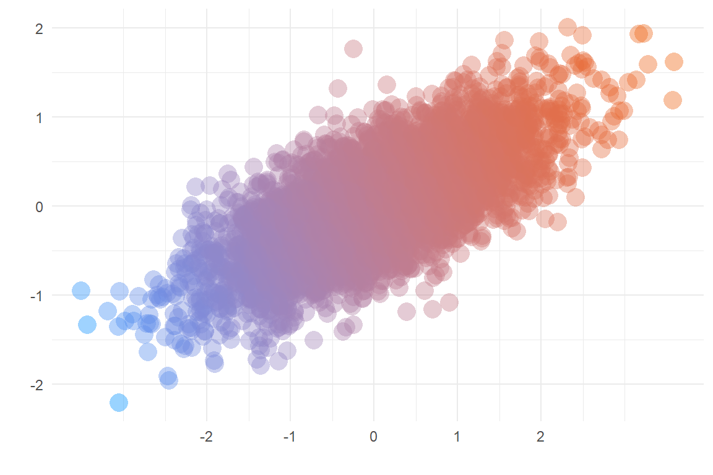
To load data from a delimited text file, we normally
use the read.table() function, indicating the name of the
file we want to load (including the directory if the file is not located
in the same working directory as the R session). Furthermore, we can
specify if the file has a header with header = TRUE (by
default FALSE) or the file delimiter with
sep = (by default sep = "", i.e., any white
space).
For example, to load the content of the data.txt file,
which has a header and is a tab-delimited file, we will write:
data <- read.table("data.txt", header = TRUE, sep = "\t")
Also, the read.csv() function allows opening files in
.csv format (comma-separated values) and the
read_excel() function of the readxl package
allows opening Microsoft Excel files.
In R, the most common data types are:
"AGT", "2")1, -3) or doubles
(e.g. 0.5, -12.3)2L
(the L tells R to store this as an integer)TRUE (or T) and FALSE (or
F) To know the data type, you can use
the class() function.
type_list <- list(TRUE, 1.2, 10L, "a")
sapply(type_list, class)## [1] "logical" "numeric" "integer" "character"Elements of the previous data types may be combined to form data structures. The main data structures are:
# A vector x of mode numeric
x <- c(1, 2, 3)
# A vector y of mode logical
y <- c(TRUE, TRUE, FALSE, FALSE)
# A vector z of mode character
z <- c("Sarah", "Tracy", "Jon")# A 2 x 2 matrix
matrix22 <- matrix(
c(1, 2, 3, 4),
nrow = 2,
ncol = 2)# A vector containing "dna" and "rna"
factor_vector <- as.factor(c("rna", "dna", "dna", "rna"))
str(factor_vector)## Factor w/ 2 levels "dna","rna": 2 1 1 2 Remember to always
transform categorical variables to a factor. You can have a
categorical variable as characters, like the previous example
(“dna” and “rna”) but also as numerical values
(you can have groups “1”, “2” and
“3”). In this case you need to tell R to use numerical
values as a factor, transforming them using the as.factor()
function.
# A list
x <- list(1, "a", TRUE, 1+4i)# A data frame
dat <- data.frame(id = letters[1:10], x = 1:10, y = 11:20)There is grounded theory about data visualization (Ortiz 2014). This section highlights the pioneering contribution of the work of Edward Tufte (1942–), American statistician and professor emeritus of political science, statistics, and computer science at Yale University. One of the central ideas of Tufte’s work refers to the removal of non-useful elements in the graphics, as they distract attention from the explanatory elements. He coined the word chartjunk to refer to these useless, non-informative, or information-obscuring elements (Minguillon 2016). In contrast, the concept of excellence was defined as the communication of complex ideas with clarity, precision and efficiency (Minguillon 2016).
Applicable to any graphic. These are concrete and relatively objective guides to assess the quality of a graph (Tufte, 2001).
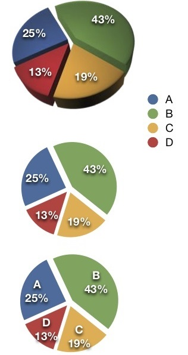
The lie factor is the ratio of the size of an effect shown in the graphic to the size of the effect in the data. Ideally, the lie factor should be 1 (no distortion).
Chartjunk refers to unnecessary or confusing visual elements in graphs that are not needed to understand the information represented, or that distract the viewer from this information.
A popular design that qualifies as chartjunk and introduces lie factors is the 3D pie. In the figure, we can see how segment C looks bigger than B, although it is not the case (lie factor). The reason is the variation in the perspective that does not correspond to variation in the data (chartjunk).
If we correct by removing the 3D effect, the lie factor is reduced, but there are still elements that can improve the understanding of the graph: the relation between the colour, the quantification and the category. We can add tags as shown in the series on the right, but then: why not simply show the data in a table? What does the pie graph add to the interpretation? This could be more difficult if, for example, more categories are added.
Maximizing the proportion of data-ink in our graphs has immediate benefits. The rule is: if there is ink that does not represent variation in the data, or the removal of that ink does not represent loss of meaning, that ink must be removed.
\[ Data\text{-}ink\;ratio\;=\;\frac{Data\text{-}ink}{Total\;ink\;used\;to\;print\;the\;graphic} \]
According to the Tufte principle, the data must be displayed above all, so that everything that does not provide information must be deleted (including background color, borders, grids, …).
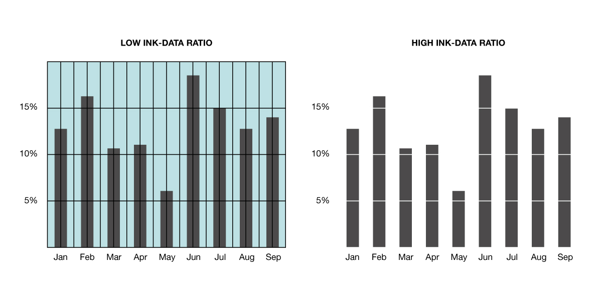
As we have previously introduced, Tufte defined the term excellence in data visualization as communicating complex ideas with clarity, precision and efficiency. A good visualization should:
y axis)In a natural language, there is a series of rules that organize words into sentences: the grammar. Wilkinson (2005) created a grammar of graphics which offers us the basic elements to build them.
The components (or layers) of the grammar of graphics are:
aes)
describing how variables in the data are mapped to aesthetic attributes
that you can perceivestat)
summarise data in many useful ways. For example, binning and counting
observations to create a histogram, or summarising a 2D relationship
with a linear modelgeom) represent
what you actually see on the plot: points, lines, polygons, etc.coord) describes
how data coordinates are mapped to the plane of the graphic. It also
provides axes and grid lines to make it possible to read the graph. We
normally use a Cartesian coordinate system, but a number of others are
available, including polar coordinates and map projections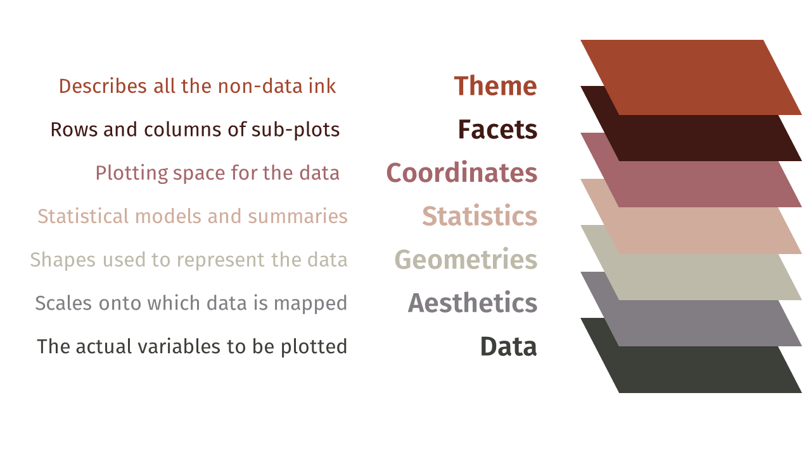
ggplot2The following examples will walk you through the basic components of
the ggplot2 grammar. The examples use data from the
datasets package, which is already loaded by default in the
R session, as well as some datasets loaded with the
ggplot2 package. ggplot2 requires data to be
stored in data frames and in a tidy
format (one observation per row and one variable per
column):
head(iris)## Sepal.Length Sepal.Width Petal.Length Petal.Width Species
## 1 5.1 3.5 1.4 0.2 setosa
## 2 4.9 3.0 1.4 0.2 setosa
## 3 4.7 3.2 1.3 0.2 setosa
## 4 4.6 3.1 1.5 0.2 setosa
## 5 5.0 3.6 1.4 0.2 setosa
## 6 5.4 3.9 1.7 0.4 setosaclass(iris)## [1] "data.frame"Data are often stored in a wide format, where the same variable is spread across several columns. For example, the expression of three genes measured in two conditions:
expr_wide <- data.frame(gene = c("BRCA1", "TP53", "MYC"),
control = c(5.2, 8.1, 3.4),
treated = c(7.9, 8.3, 9.6))
expr_wide## gene control treated
## 1 BRCA1 5.2 7.9
## 2 TP53 8.1 8.3
## 3 MYC 3.4 9.6Here control and treated are not two
different variables: they are two values of the same variable (the
condition), and the values in the cells are all
expression measurements. To map the condition to an
aesthetic (e.g., x or colour)
ggplot2 needs it as a single column. The function
pivot_longer() from the tidyr package
transforms the data into a long (tidy) format:
expr_long <- pivot_longer(expr_wide,
cols = c(control, treated),
names_to = "condition",
values_to = "expression")
expr_long## # A tibble: 6 × 3
## gene condition expression
## <chr> <chr> <dbl>
## 1 BRCA1 control 5.2
## 2 BRCA1 treated 7.9
## 3 TP53 control 8.1
## 4 TP53 treated 8.3
## 5 MYC control 3.4
## 6 MYC treated 9.6Now each row is one observation (one gene in one condition) and we can plot it:
ggplot(data = expr_long, mapping = aes(x = gene, y = expression, fill = condition)) +
geom_col(position = "dodge")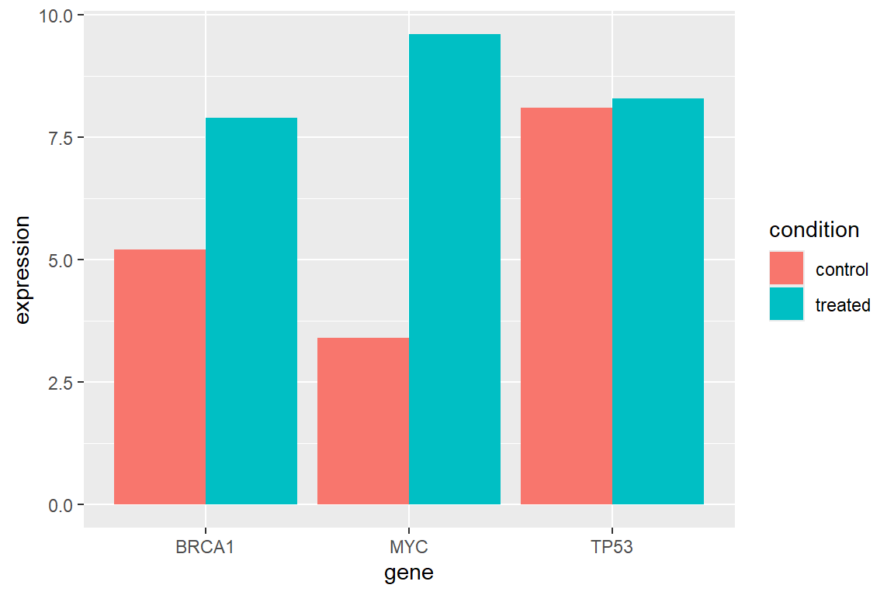
If you ever get stuck trying to
plot two columns at the same time, the solution is usually to transform
the data to the long format first. The opposite operation is done with
pivot_wider().
For the first problem we want to represent the
relationship between the variables
Sepal.Width and Sepal.Length from the
iris data frame. This data frame is a collection of data
that quantifies the morphologic variation of iris
flowers of three related species (setosa, versicolor and
virginica).
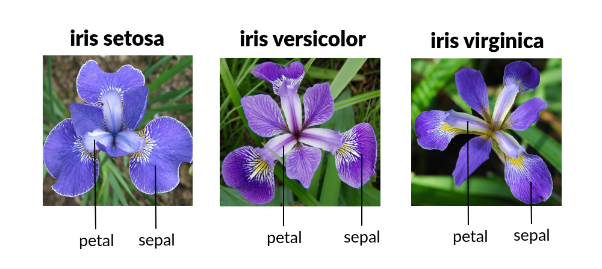
This famous (Fisher’s or
Anderson’s) iris dataset gives the measurements in
centimeters of the variables sepal length and width and petal length and
width, respectively, for 50 flowers from each of 3 species of iris. You
can type ?iris in the R console to read a
description of the data.
To represent any graph in ggplot2 we need two basic
functions that are combined with a + sign:
ggplot(data = iris, mapping = aes(x = Sepal.Width, y = Sepal.Length)) +
geom_point()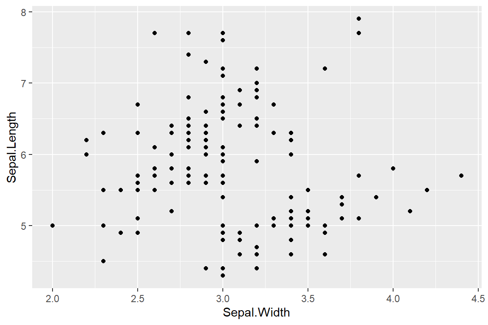
The variables that we want to represent are wrapped within an
aes() function, that specifies the
mapping between the variables and the
aesthetic attributes (in this case we map them
to spatial positions, x and y). We call the
variables directly by their names, because we also pass the entire data
frame to the call with the data argument, so
ggplot knows where to get them from. Finally, we need to
add the geometric object we want to represent.
In this case, points.
Another variable in the data indicates the species
(Species) of each flower. There are three species: setosa,
versicolor and virginica.
table(iris$Species)##
## setosa versicolor virginica
## 50 50 50Let’s say we want to represent the different species in different
colours. In this case we want to use Species as a
categorical variable, i.e., as a factor. By default,
this variable is already a factor:
class(iris$Species)## [1] "factor"We use Species in the colour aesthetic:
ggplot(data = iris, mapping = aes(x = Sepal.Width, y = Sepal.Length, colour = Species)) +
geom_point()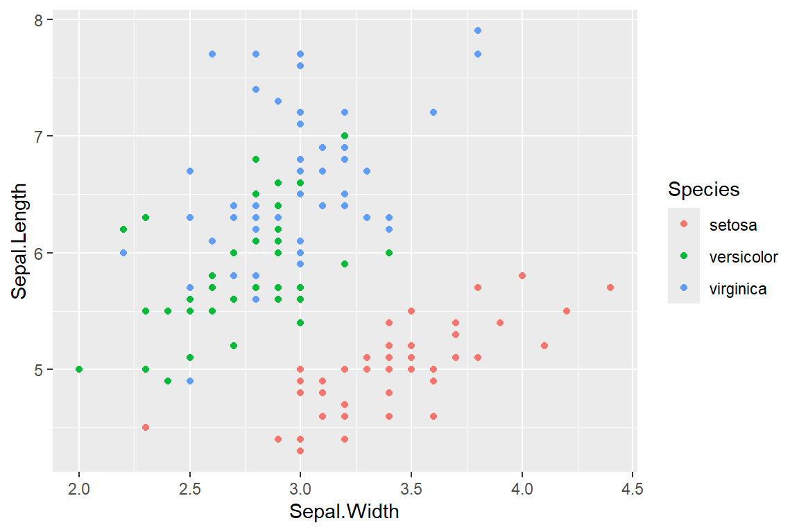
Note that ggplot adds
a legend by default for all the variables that have
been mapped to some aesthetic attribute. This way we can read all the
variables without extra effort.
Try mapping Species to another aesthetic attribute
instead of colour, such as shape,
size or alpha. Are you getting any warning
message? Why?
For this second exercise we are going to use the mtcars
dataset, which contains information about the fuel consumption
and 10 aspects of automobile design and performance for 32
automobiles.
head(mtcars)## mpg cyl disp hp drat wt qsec vs am gear carb
## Mazda RX4 21.0 6 160 110 3.90 2.620 16.46 0 1 4 4
## Mazda RX4 Wag 21.0 6 160 110 3.90 2.875 17.02 0 1 4 4
## Datsun 710 22.8 4 108 93 3.85 2.320 18.61 1 1 4 1
## Hornet 4 Drive 21.4 6 258 110 3.08 3.215 19.44 1 0 3 1
## Hornet Sportabout 18.7 8 360 175 3.15 3.440 17.02 0 0 3 2
## Valiant 18.1 6 225 105 2.76 3.460 20.22 1 0 3 1class(mtcars)## [1] "data.frame" The data was extracted from the
1974 Motor Trend US magazine, and comprises fuel consumption and 10
aspects of automobile design and performance for 32 automobiles (1973–74
models). You can type ?mtcars in the R console
to read a description of the data.
One of the variables of interest in the data indicates the number of
cylinders of the car engines (cyl). There are cars with 4,
6 or 8 cylinders.
We want to summarize this data in a simple bar plot
representing the number of cars in each cylinder category; i.e., how
many cars have 4, 6 or 8 cylinders. However, the number of cars with 4
cylinders is not a piece of information present in the dataset, for
example. To know the number it is necessary to count the rows where
cyl = 4, and we are not going to do it by hand
.
ggplot2 is capable of doing simple summary operations
with the input variables, referred to as statistical
transformations. One of them is to count the occurrences of
each value in a variable, which is precisely what we want to do. And the
geom_bar function happens to use the count
statistical transformation by default on the variable mapped to the
x axis.
The first thing that we are going to do is to check the class of the
cyl variable:
# First we check the class of cyl
class(mtcars$cyl)## [1] "numeric"We see that it’s a numeric variable. In this case we want to use
cyl as a categorical variable, distinguishing groups rather
than indicating a value in a numerical continuous scale. For that, we
need to change its class before giving it to ggplot using
the as.factor() function.
# We create a new variable in the data frame, cyl_f, that is cyl converted to factor
mtcars$cyl_f <- as.factor(mtcars$cyl)Now we can create the bar plot:
ggplot(data = mtcars, mapping = aes(x = cyl_f)) +
geom_bar()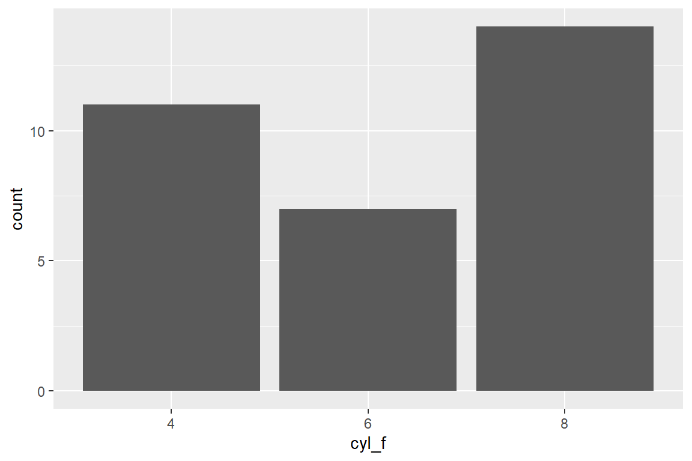
Imagine that we already have a table with the number of cars in each
cylinder category. If we had a precomputed data frame with
cyl and number_of_cars instead, we could pass
the number_of_cars variable to the geom_col
function instead of geom_bar, which by default takes the
variables mapped to x and y without
transformation.
# Let's create the data frame
counts_by_cyl_data_frame <- as.data.frame(table(mtcars$cyl))
names(counts_by_cyl_data_frame) <- c("cyl", "number_of_cars")
# See the data frame
counts_by_cyl_data_frame## cyl number_of_cars
## 1 4 11
## 2 6 7
## 3 8 14# New graph with geom_col
ggplot(data = counts_by_cyl_data_frame, mapping = aes(x = cyl, y = number_of_cars)) +
geom_col() We’ll use geom_bar
if the dataset is not processed and we need to count the occurrences of
a category. If we have a processed dataset with the counts, we’ll use
geom_col.
We have seen in the scatter plot example how to represent groups
encoded in extra variables as colours. Say we now want to show
transmission type (am) in the bar plot, in addition to the
number of cylinders. We can map am to the filling colour of
the bars, fill (the colour aesthetic would
change the edges of the rectangles). There are two types of
transmission: 0 for automatic cars and 1 for
manual cars.
# First we check the class of the variable
class(mtcars$am)## [1] "numeric"# We make am a factor, and we can change the 0/1 notation for a more informative notation: automatic/manual
mtcars$am_f <- factor(mtcars$am, levels = c(0, 1), labels = c("automatic", "manual"))
# Plot
ggplot(data = mtcars, mapping = aes(x = cyl_f, fill = am_f)) +
geom_bar()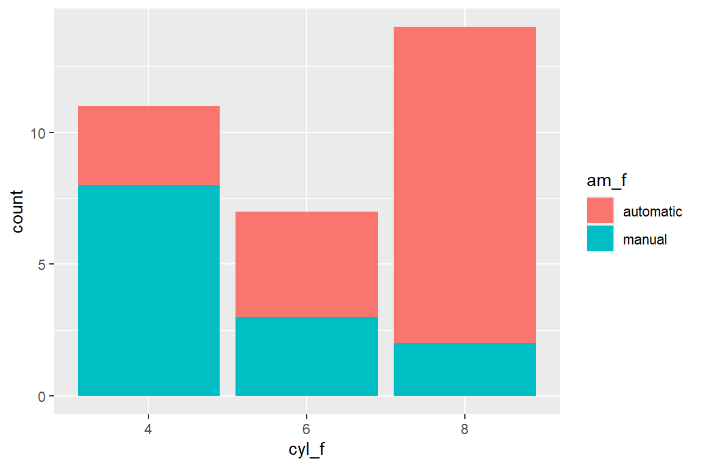
Each geometric object in ggplot2 also has a
position argument that controls how groups are
arranged. In geom_bar the default position is to stack the
groups. We can change it to a side-by-side position with
position = "dodge".
ggplot(data = mtcars, mapping = aes(x = cyl_f, fill = am_f)) +
geom_bar(position = "dodge")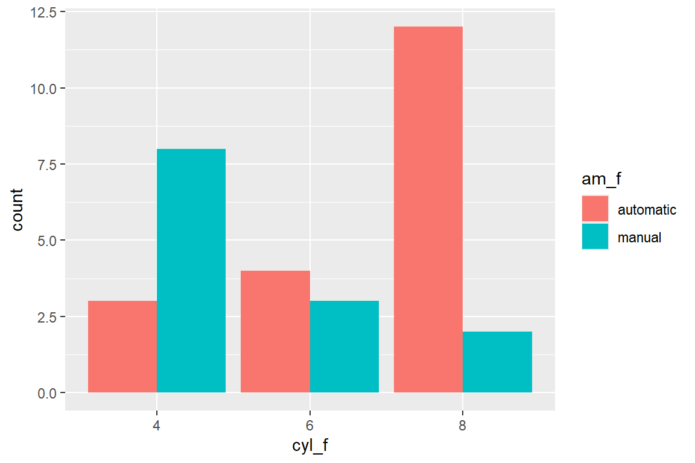
Update the plot above with the "fill" position
adjustment instead of "dodge". What is it doing?
Update the previous plot to group by the variable gear
instead of the transmission type (am_f). The
gear variable is the number of forward gears: cars can have
3, 4 or 5 gears. Check if you need to transform gear to a
factor.
Now we have a new dataset called diamonds and we need to
understand the distribution of some of its continuous variables. A good
place to start is a histogram, which represents the number of
observations in different ranges as bars.
head(diamonds)## # A tibble: 6 × 10
## carat cut color clarity depth table price x y z
## <dbl> <ord> <ord> <ord> <dbl> <dbl> <int> <dbl> <dbl> <dbl>
## 1 0.23 Ideal E SI2 61.5 55 326 3.95 3.98 2.43
## 2 0.21 Premium E SI1 59.8 61 326 3.89 3.84 2.31
## 3 0.23 Good E VS1 56.9 65 327 4.05 4.07 2.31
## 4 0.29 Premium I VS2 62.4 58 334 4.2 4.23 2.63
## 5 0.31 Good J SI2 63.3 58 335 4.34 4.35 2.75
## 6 0.24 Very Good J VVS2 62.8 57 336 3.94 3.96 2.48class(diamonds)## [1] "tbl_df" "tbl" "data.frame" diamonds is a dataset
containing the prices and other attributes of almost 54,000 diamonds.
You can type ?diamonds in the R console to
read a description of the data.
The function that we need is called geom_histogram() and
has the statistical transformation bin by default. In this
case, bin divides the variable mapped to x
into ranges (bins) and counts the number of values in each bin. The
width of the bins is controlled with the argument binwidth
(alternatively, you can set the number of bins with bins).
In this example we show the distribution of the weights of diamonds
(carat).
ggplot(data = diamonds, mapping = aes(x = carat)) +
geom_histogram(binwidth = 0.3)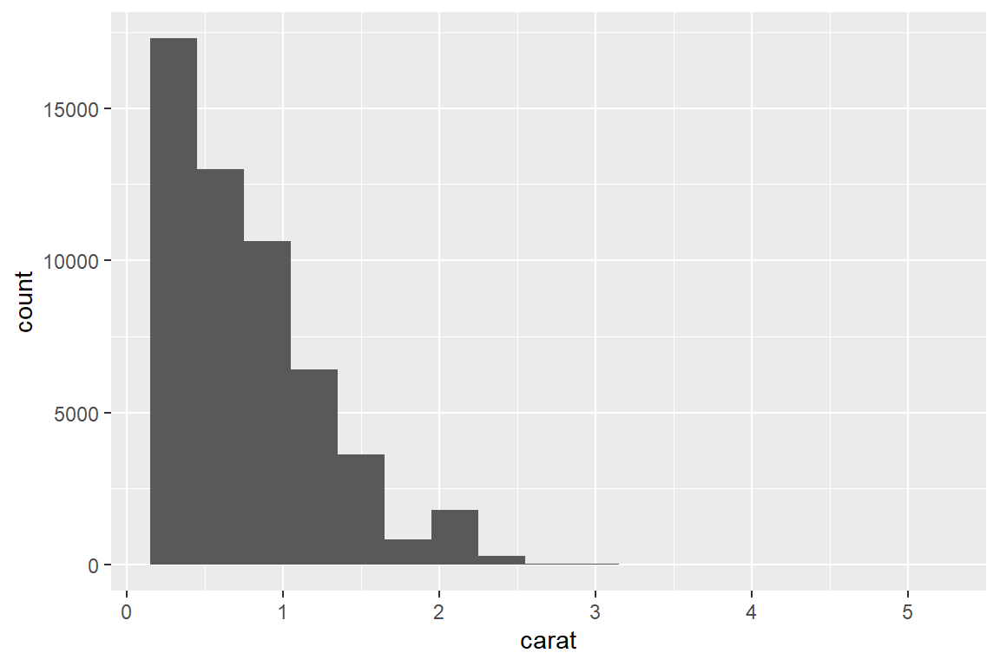
Note that histograms deal with continuous variables while bar plots deal with discrete ones, but they are sometimes confused.
The diamonds dataset contains more information about
diamonds, such as the quality (cut) or the color
(color). To compare the distribution of the weight among
qualities, we can try to map cut to the fill
aesthetic:
ggplot(data = diamonds, mapping = aes(x = carat, fill = cut)) +
geom_histogram(binwidth = 0.3)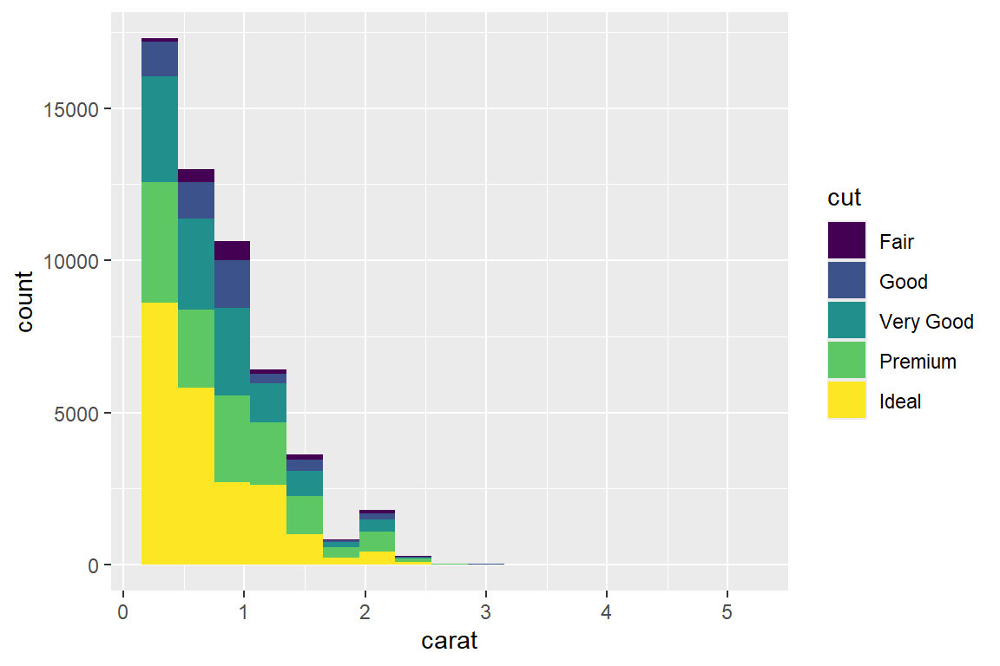
Stacked histograms are difficult to interpret. We can use another
position instead of the default "stack" position. For
example, using position = "dodge".
ggplot(data = diamonds, mapping = aes(x = carat, fill = cut)) +
geom_histogram(position = "dodge", binwidth = 0.3)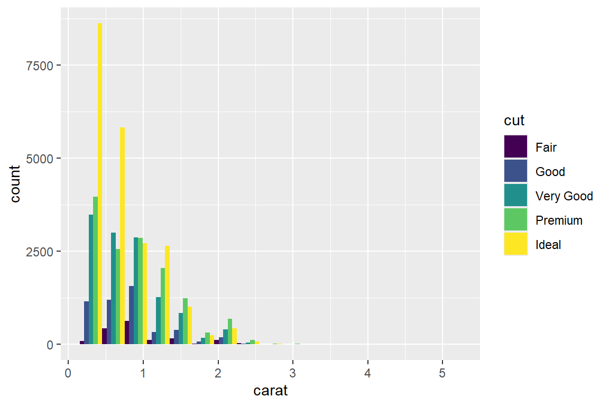
But there’s an even better option. ggplot2 provides a
simple way of creating small multiples or facets with
the function facet_grid:
ggplot(data = diamonds, mapping = aes(x = carat, fill = cut)) +
geom_histogram(position = "dodge", binwidth = 0.3) +
facet_grid(cut ~ .)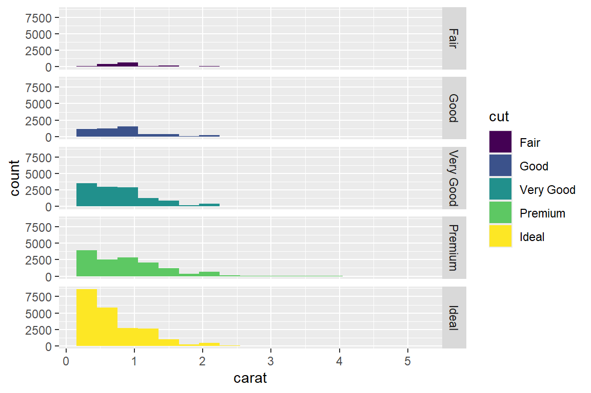
What happens if you change the order of the facet_grid
elements, i.e., (. ~ cut)?
Which is the best subplot configuration to compare the distributions and why?
Another way of showing the distribution of numerical data is by means of a boxplot. It helps to understand the skewness of the data by displaying the median and the quartiles. It also shows outliers as separate dots.
The function that we are going to use is geom_boxplot().
In this example we show the distribution of the weights of diamonds
(carat).
ggplot(data = diamonds, mapping = aes(y = carat)) +
geom_boxplot()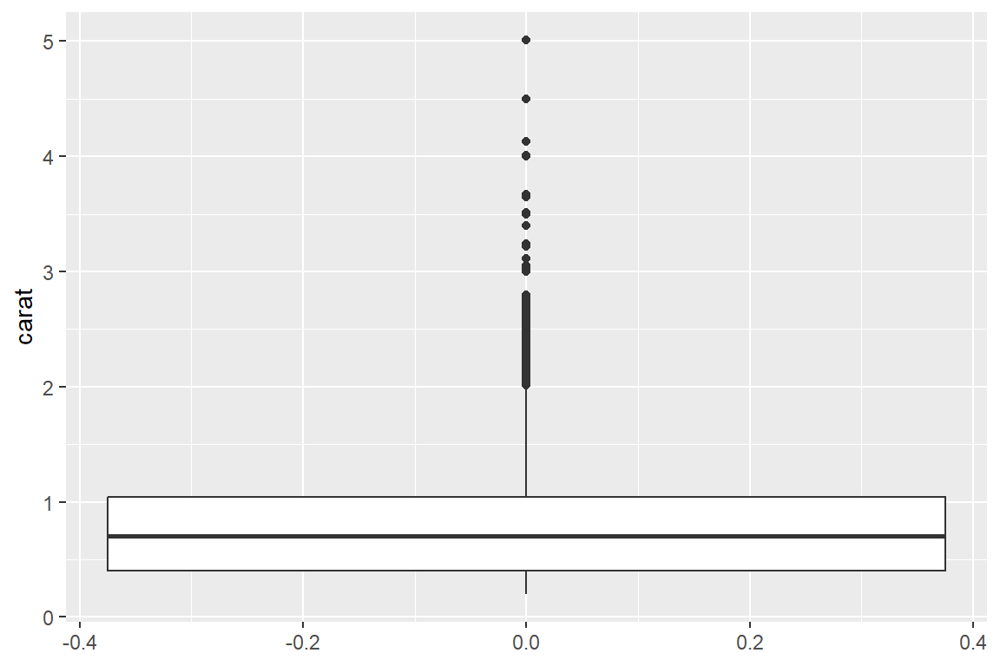
One characteristic of boxplots is that you can show the distribution
of one variable (carat) with respect to another categorical
variable. For example, we can show the distribution of
carat based on the color of the diamond
(color).
ggplot(data = diamonds, mapping = aes(y = carat, x = color)) +
geom_boxplot()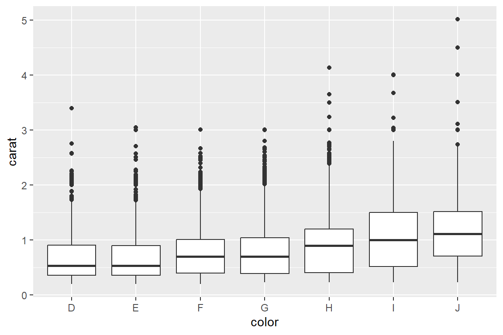
Try to fill the boxes with a colour. How would you do it?
A boxplot summarizes the distribution with five numbers. With
thousands of observations (as in diamonds) this is very
useful, but with small samples it hides how many
observations there are and how they are distributed. In biology, small
samples are the rule rather than the exception.
The ToothGrowth dataset contains the length of the teeth
of 60 guinea pigs that received vitamin C at three doses
(dose) by two delivery methods (supp), i.e.,
only 20 animals per dose. Let’s compare three ways of representing the
effect of the dose:
ToothGrowth$dose_f <- as.factor(ToothGrowth$dose)
# Boxplot only
p_box <- ggplot(data = ToothGrowth, mapping = aes(x = dose_f, y = len)) +
geom_boxplot()
# Boxplot + raw data
p_jitter <- ggplot(data = ToothGrowth, mapping = aes(x = dose_f, y = len)) +
geom_boxplot(outlier.shape = NA) + # we hide the outliers, as all points will be drawn
geom_jitter(width = 0.1, alpha = 0.6) # jitter adds a small random horizontal shift to avoid overplotting
# Violin + raw data
p_violin <- ggplot(data = ToothGrowth, mapping = aes(x = dose_f, y = len)) +
geom_violin() +
geom_jitter(width = 0.1, alpha = 0.6)
p_box + p_jitter + p_violin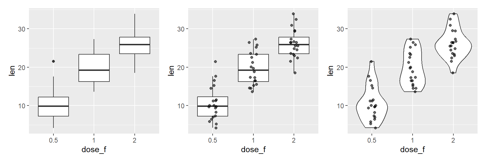
Note that we have combined several
geometric objects in the same plot: each geom_* is a
layer drawn on top of the previous one, so the order
matters.
A very common representation in scientific articles is the so-called dynamite plot: a bar with the mean and an error bar.
ggplot(data = ToothGrowth, mapping = aes(x = dose_f, y = len)) +
stat_summary(fun = mean, geom = "col") +
stat_summary(fun.data = mean_se, geom = "errorbar", width = 0.2)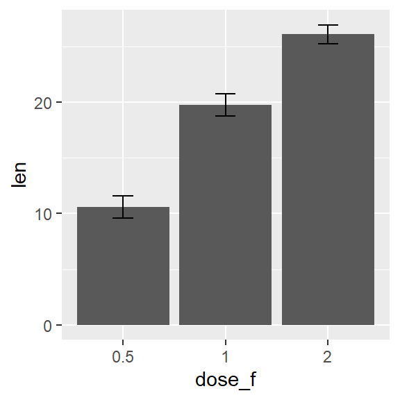
Avoid dynamite plots. They show only two numbers per group (mean and standard error), hide the sample size and the shape of the distribution (skewness, outliers, bimodality), and the bar suggests that the data go from 0 to the mean, which is meaningless for a continuous variable. Very different datasets can produce the same dynamite plot. Whenever possible, show the data.
Represent the boxplot of carat by color
from the diamonds dataset adding the raw data with
geom_jitter(). Is it a good idea in this case? Why? Which
representation would you choose depending on the sample size?
Sometimes the observations in two groups are not independent: the same individual is measured twice (before/after a treatment, two tissues of the same patient, …). This is known as a paired design, and our graph should reflect it.
The sleep dataset shows the effect of two soporific
drugs (group) on the extra hours of sleep
(extra) of 10 patients (ID). Each patient
received both drugs.
head(sleep)## extra group ID
## 1 0.7 1 1
## 2 -1.6 1 2
## 3 -0.2 1 3
## 4 -1.2 1 4
## 5 -0.1 1 5
## 6 3.4 1 6If we represent the data as two independent groups, the boxplots overlap considerably:
ggplot(data = sleep, mapping = aes(x = group, y = extra)) +
geom_boxplot()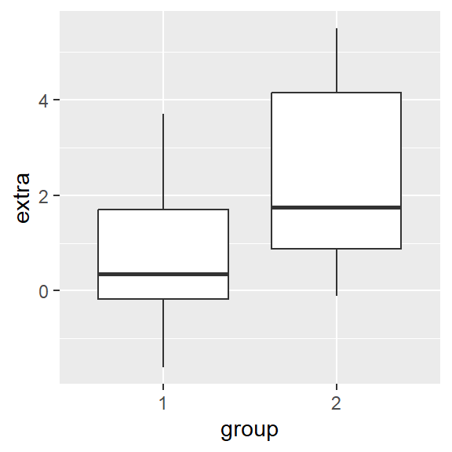
But we are ignoring an important piece of information: which
observations come from the same patient. We can connect them with a line
using geom_line() and the group aesthetic,
which tells ggplot2 which points belong together. This type
of graph is known as a slopegraph:
ggplot(data = sleep, mapping = aes(x = group, y = extra)) +
geom_line(mapping = aes(group = ID), colour = "grey60") +
geom_point()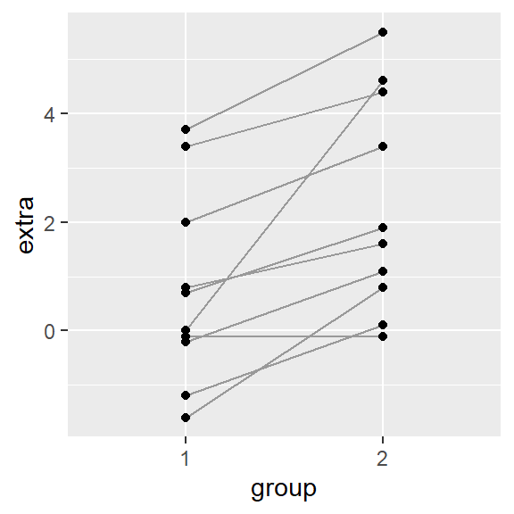
Now it is clear that 9 out of 10 patients slept more with drug 2 than with drug 1 (and the remaining one slept the same), something that the boxplots did not show.
Do not confuse the
group aesthetic (which observations are connected by a
line) with the group column of the sleep
dataset (the drug). Here we use aes(group = ID): one line
per patient.
So far we have used the default colour palettes for
all our representations. We may need to change them to make them
accessible to colourblind people, match the colour
palette of our project or give meaningful values (e.g.,
red for positive and blue for negative). We can control the exact
mapping of a variable to an aesthetic attribute with the
scale_* functions.
In the following example we manually set the colour of the five diamond quality categories. You can use other colour names checking the following R color guide.
ggplot(data = diamonds, mapping = aes(x = carat, fill = cut)) +
geom_histogram(position = "dodge", binwidth = 0.3) +
facet_grid(cut ~ .) +
scale_fill_manual(values = c("sienna1", "orange", "lightseagreen", "orangered", "red4"))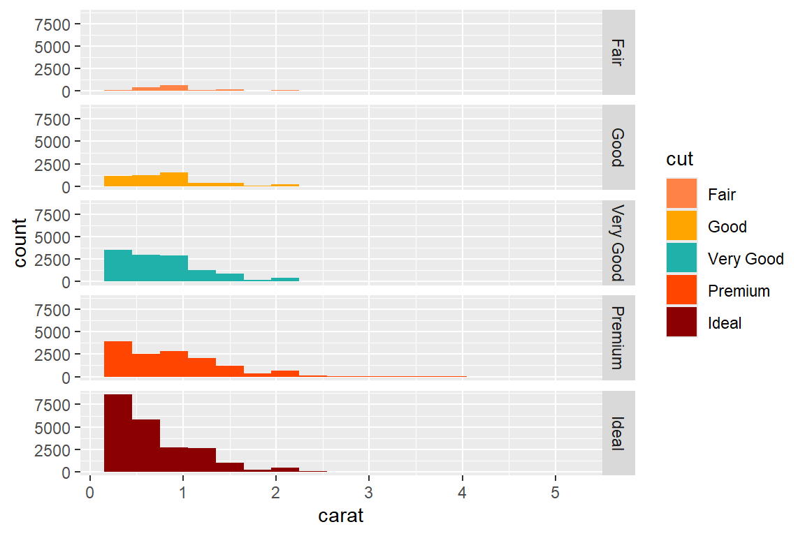
Note that scale functions update both the aesthetic mappings in the plot and in the legend.
We may also need to add a title to the plot or change the axis titles. There are several options for that:
ggplot2, axis and legend titles can be specified
with the name argument within a scale_*
function+ ggtitle("Title name")labs(): with
fill = "" you will set a new legend title and with
title = "" a new titleSee the working example:
# We save the common part of the plot in a variable and then we can add more components with the "+" sign
p <- ggplot(data = diamonds, mapping = aes(x = carat, fill = cut)) +
geom_histogram(position = "dodge", binwidth = 0.3) +
facet_grid(cut ~ .)
# Option A:
p + scale_fill_manual(values = c("sienna1", "orange", "lightseagreen", "orangered", "red4"), name = "Quality") +
scale_x_continuous(name = "Weight of the diamond") +
ggtitle("Diamond weight variation")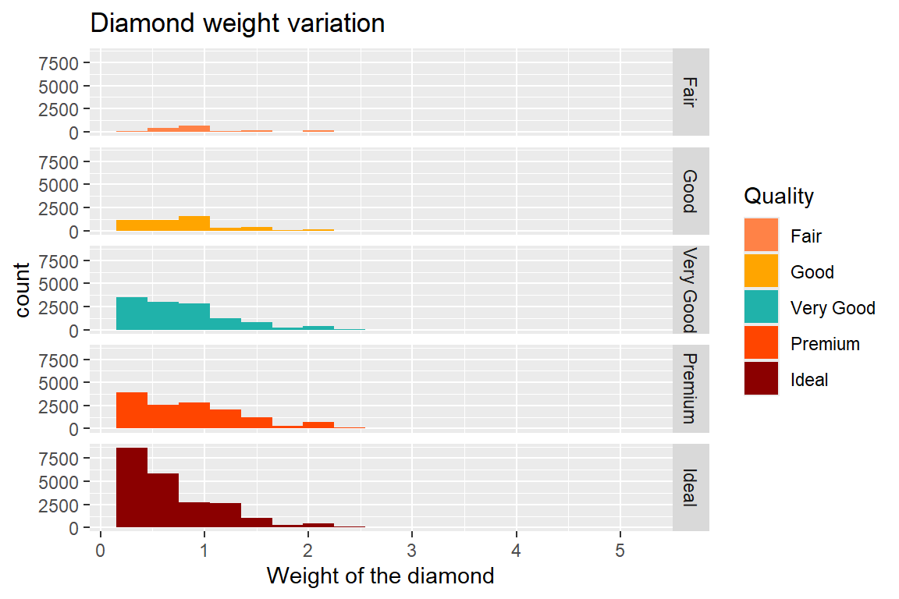
# Option B:
# p + scale_fill_manual(values = c("sienna1", "orange", "lightseagreen", "orangered", "red4")) +
# labs(title = "Diamond weight variation", x = "Weight of the diamond", fill = "Quality")The appearance of ggplot2 plots is controlled by the
themes. The default ggplot2 theme has a
gray background and “is designed to put the data forward yet make
comparisons easy”. You can change the general appearance by
choosing a different theme with theme_* functions. There
are eight
different themes available. The following example uses the “black
and white” theme (theme_bw()):
ggplot(data = diamonds, mapping = aes(x = carat, fill = cut)) +
geom_histogram(position = "dodge", binwidth = 0.3) +
facet_grid(cut ~ .) +
scale_fill_manual(values = c("sienna1", "orange", "lightseagreen", "orangered", "red4"), name = "Quality") +
scale_x_continuous(name = "Weight of the diamond") +
ggtitle("Diamond weight variation") +
theme_bw()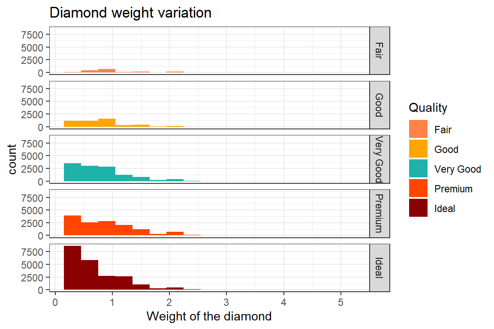
Using the previous code, try other scale_fill_*
functions in ggplot2 with pre-defined palettes, such as
scale_fill_hue(), scale_fill_brewer(),
scale_fill_viridis_d() (the default for ordered factors
such as cut) and scale_fill_grey(). Which
palette would you use to ensure that colourblind people can distinguish
the colours, scale_fill_hue() or
scale_fill_viridis_d()?
Around 8% of men and 0.5% of women
have some form of colour vision deficiency. Besides
viridis, the
scale_fill_brewer(palette = "Dark2") and
palette = "Set2" palettes are colourblind-friendly for
categorical variables. You can check how your figure is seen with a
colour blindness simulator such as Coblis.
Try the subtitle = "", caption = "" and
tag = "" arguments of the labs() function.
What are they for?
Which theme of the eight available do you think maximizes the data-ink ratio?
Scientific figures often have several panels (A, B, C…). The
patchwork package allows combining ggplot2
plots with simple operators: + places plots side by side,
/ places them one on top of the other, and parentheses
group them.
p1 <- ggplot(data = iris, mapping = aes(x = Sepal.Width, y = Sepal.Length, colour = Species)) +
geom_point() +
theme_classic()
p2 <- ggplot(data = iris, mapping = aes(x = Species, y = Petal.Length)) +
geom_boxplot(outlier.shape = NA) +
geom_jitter(width = 0.1, alpha = 0.5) +
theme_classic()
p3 <- ggplot(data = iris, mapping = aes(x = Petal.Length, fill = Species)) +
geom_histogram(binwidth = 0.2) +
theme_classic()
(p1 + p2) / p3 + plot_annotation(tag_levels = "A")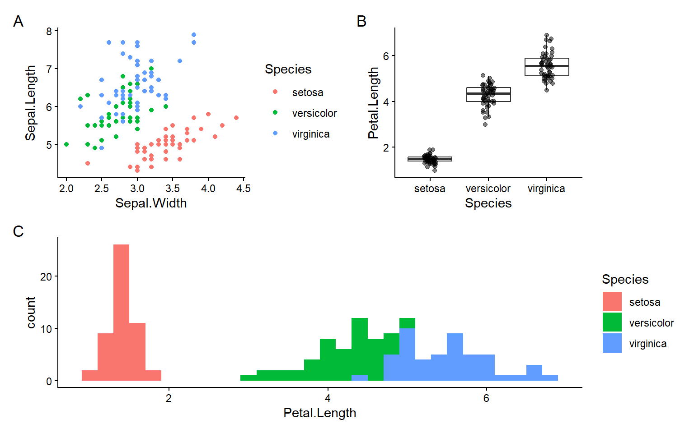
When several panels share the same
legend, you can collect them into a single one with
plot_layout(guides = "collect").
Combine the plots p_box, p_jitter and
p_violin from Example 4b in a single column, with tags “a”,
“b”, “c” (lowercase), and add a common title with
plot_annotation(title = "").
There are several ways to save a plot to a file. Here you have a couple of examples:
A. Export button from the RStudio plot panel:
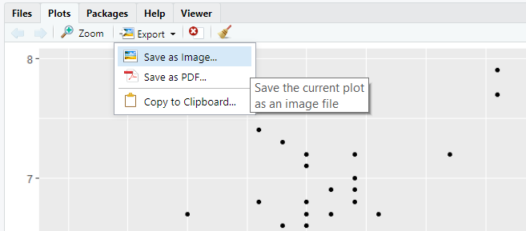
B. ggsave function from the ggplot2
package
p <- ggplot(data = iris, mapping = aes(x = Sepal.Width, y = Sepal.Length)) + geom_point()
ggsave(filename = "plot.png", plot = p, width = 6, height = 4) # In inches by defaultWhen preparing a figure for a publication, journals usually ask for a
minimum resolution (typically 300 dpi for photographs
and plots, and 600 dpi or more for line art) and a specific
size (e.g., 85 mm for a single column and 170 mm for a full
page width). You can set both in ggsave():
ggsave(filename = "figure1.png", plot = p, width = 85, height = 70, units = "mm", dpi = 300) The text size in
ggplot2 is defined in points, independently of the size of
the figure. A plot saved with width = 6, height = 4
(inches) and then shrunk to fit in a column will have tiny, unreadable
labels. It is better to save the figure directly at its final
size and adjust the text size with the theme, e.g.,
theme_classic(base_size = 8).
Plots can be saved using different image file formats. Option
A gives you the format options in a drop-down list
(image format: PNG, JPG, …), option B guesses the
format from the extension (e.g. plot.png or
plot.pdf).
The main formats can be classified into:
Raster/bitmap formats, where information is stored in pixels and have a maximum resolution.
Vector formats, where information is encoded in geometric shapes that can be rendered at any size without losing resolution.
svglite packageHybrid
Save the plot p in a raster and a vector format with the
same size using ggsave() (e.g.:
width = 6, height = 4). What differences do you observe
when you zoom in on them?
Note: SVG devices require the
svglite R package and other system libraries
(libcairo2-dev and libfontconfig1-dev). If you
get an error, use PDF as the vector format instead.
If we use geom_point() to represent a scatter plot and
geom_bar() for a bar plot… could you guess how to represent
a line plot with ggplot2 syntax?
unemploy variable changes over time
(date variable) from the economics dataset
with a line plot using ggplot2 syntaxThe final image should look like this:
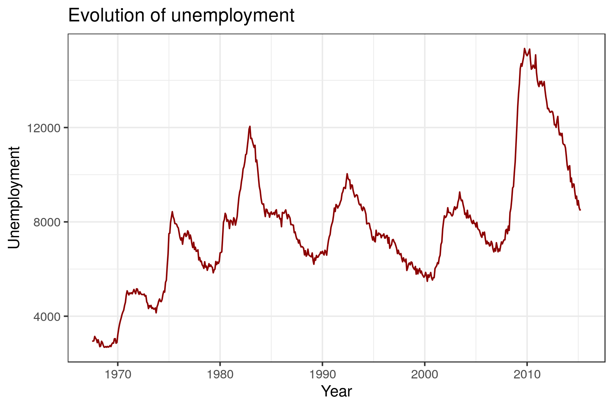
Pick one of the following plots. With your knowledge of
ggplot2, try to write the code that reproduces the same
figure. You are given the name of the dataset and the colour palette (or
other hints).
| Group | Dataset | Description | Hint |
|---|---|---|---|
| 1 | Titanic |
Survival of passengers on the Titanic | Colour palette is: “#79AEB2”, “#4A6274” |
| 2 | ToothGrowth |
The effect of vitamin C on tooth growth in guinea pigs | Colour palette is: “#58A6A6”, “#EFA355” |
| 3 | msleep |
An updated and expanded version of the mammals sleep dataset | You can colour in gray the NA values inside the scale_fill (na.value = “grey80”) |
| 4 | mpg |
Fuel economy data from 1999 and 2008 for 38 popular models of car | Colour palette is: “#4CC3CD”, “#FEE883” |
| 5 | midwest |
Midwest demographics | Two aesthetics are combined inside geom_point(), colour and size |
| 6 | diamonds |
Prices of 50,000 round cut diamonds | The viridis palette is used |
| 7 | HairEyeColor |
Hair and eye color of statistics students | Colour palette is: “#58A6A6”, “#EFA355” |
| 8 | infert |
Infertility after spontaneous and induced abortion | Colour palette is: “#900C3F”, “#C70039”, “#FF5733” |
Titanic and
HairEyeColor are stored as tables, not data frames. Use
as.data.frame() to convert them before plotting.
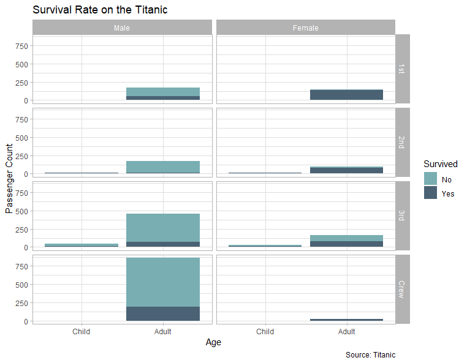 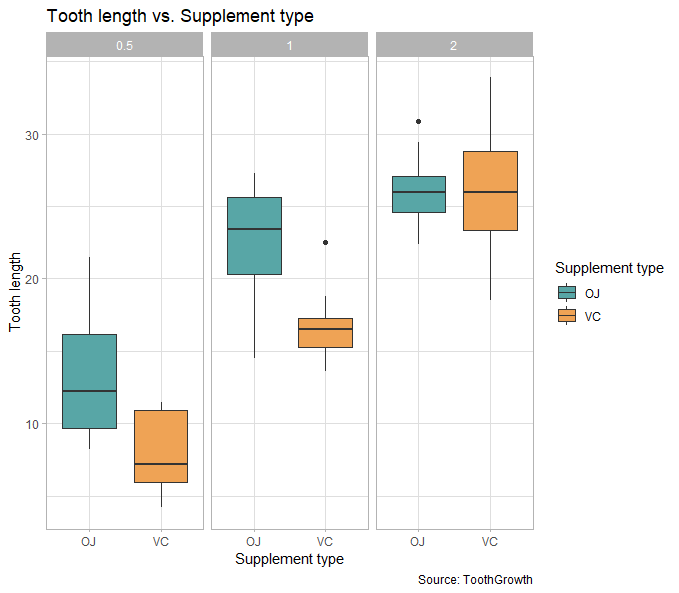 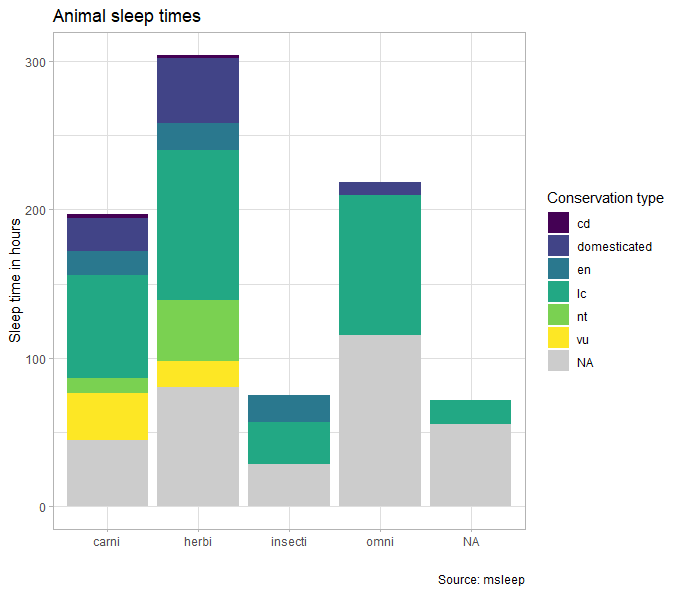 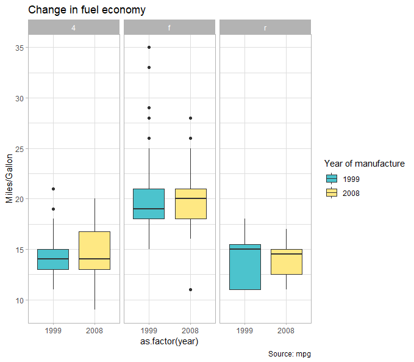 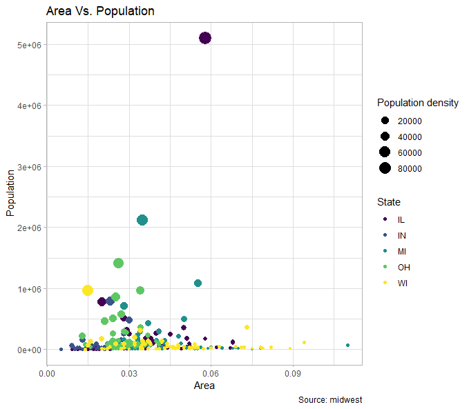 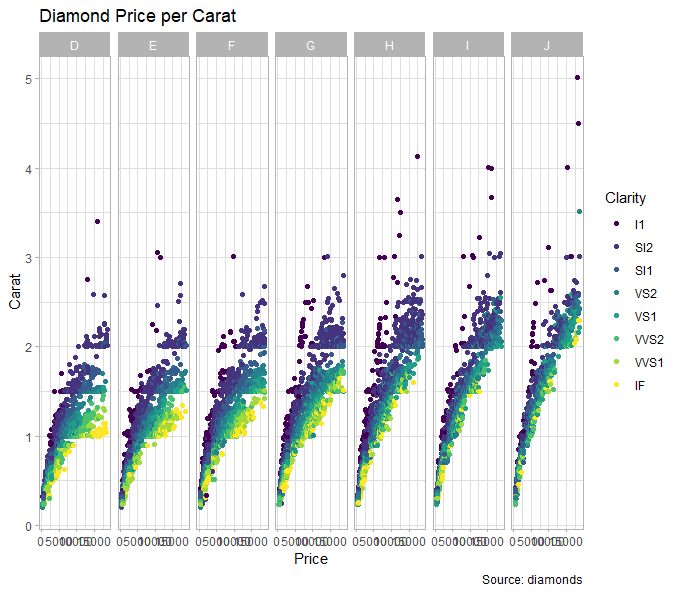 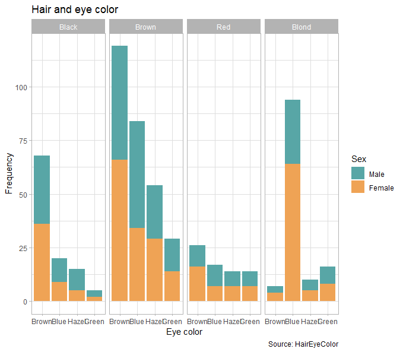 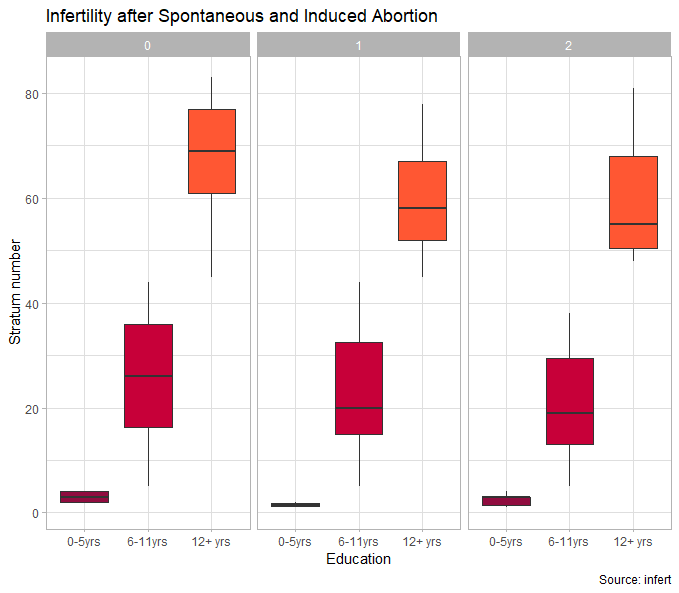
We want to practice with real-world datasets to build our
ggplot2 skills. You can choose from 7 datasets. Make a
meaningful representation of the data they contain. For each one you
have the corresponding research article and a short description that can
help.
Keep in mind what we have learnt: most of these datasets have small sample sizes, so show the raw data and avoid dynamite plots.
Datasets from: Whitlock, Michael C., and Dolph Schluter. 2020. The Analysis of Biological Data. Third Edition.
Zika virus can be spread by mosquitoes, sexual contact or from mother to fetus. In 2015 there was an outbreak in Brazil that spread to other countries in the Americas. Small head size (microcephaly) associated with abnormal brain development was frequently reported in newborn babies of infected mothers. Here are data for head measurements (biparietal diameter, in mm) of fetuses in pregnant women infected with Zika, taken from ultrasounds between 33 and 36 weeks. A head size between 80 and 94 mm is considered normal for uninfected mothers at this age.
Living at high altitude represents some physiological challenges due to the limited oxygen supply. Human populations in the Andes, Ethiopia, and Tibet have faced these challenges, and adapted. One potential mechanism of this adaptation is to raise the hemoglobin content of blood to get more oxygen. Beall et al. measured the hemoglobin content of people from these three populations as well as a control group of males living at sea level in the USA.
Altermatt and Ebert collected moths from populations in urban areas with decades of light pollution and from pristine, dark-sky areas, and counted how many of them were attracted to a light source. Moths from light-polluted areas showed a significantly weaker attraction to light, suggesting an evolutionary adaptation to artificial light at night.
Hint: the columns nAttracted
and nNotAttracted are counts of the same variable
(attracted or not). To represent them together (e.g., as stacked bars
per location) you need to transform them to the long format with
pivot_longer(). Alternatively, you can represent
fractionAttracted by lightConditions.
Some people experience one of their senses through another. For example, you might hear the name “Bob” and see grey. Saenz and Koch were interested to see how this type of perception impacted the ability to complete complex multi-sensory tasks. So they compared people with this unique type of sensory perception (known as synesthetes) to a group of people without such abilities (controls), on a test involving rhythmic temporal patterns similar to Morse code.
For some reason, restricting food intake often increases lifespan. To see if this was the case in primates, Mattison et al. fed 17 rhesus monkeys (7 females, 10 males) a reduced diet with 30% less than the normal nutrition, and 17 other rhesus monkeys (8 females, 9 males) a normal nutritious diet.
The gene for the vasopressin receptor V1a is expressed at higher levels in the forebrain of monogamous than promiscuous vole species. To see if expression of this gene influenced monogamy, Lim et al. experimentally enhanced V1a expression in the forebrain of 11 males of the meadow vole –a solitary promiscuous species– and compared the percentage of time these and control males spent huddling with a female placed with them (as a measure of monogamy).
Male spiders in the genus Tidarren are tiny and weigh about 1 percent as much as females. Just before sexual maturity, males voluntarily amputate one of their two pedipalps (their copulatory organs). Could this allow them to move faster? Ramos et al. measured the running speed of 16 males before and after the amputation.
Hint: the same 16 spiders were measured twice. Does your plot show that?
Hint: you can read the data directly using the link, for example:
data <- read.csv("https://raw.githubusercontent.com/marta-coronado/TAB/main/P2_datasets/chap03e2SpiderAmputation.csv")Prepare a publication-ready figure with one of the real datasets:
patchwork. For example, two different representations of
the same data, or two different variablesggsave() in PNG at 300 dpi
and in PDF, with a width of 170 mmUpload this Rmd document and the figures you have generated to your GitHub repository.